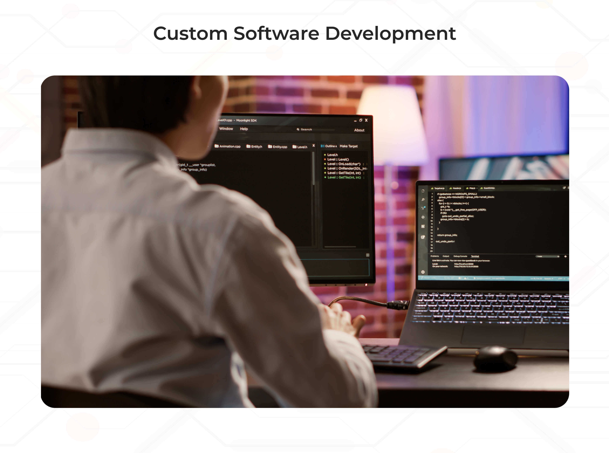
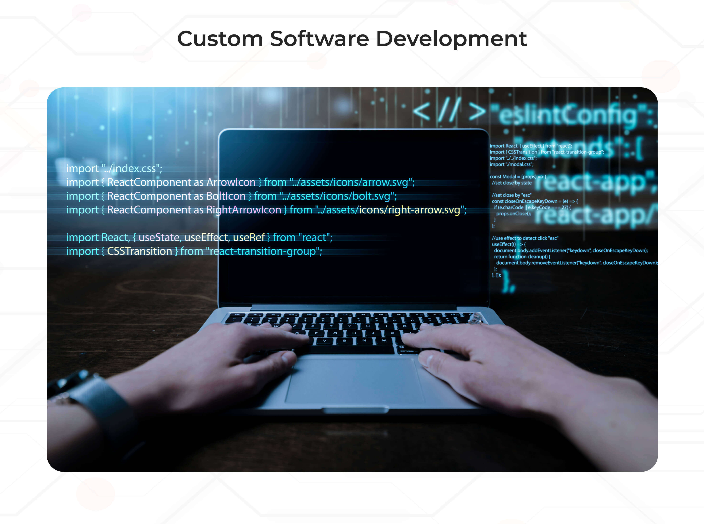

Founders are always looking out for the best and brightest ideas. If that also explains your situation then you’re probably on your way to starting custom software development for your next project. Building your digital product and making it a success can be a challenge whether you’re a new business or an established business. However, it may be a challenge that completely changes your life forever. If you’re in the same shoes then we have put together everything you need to know about building your custom software in this blog.
So, without wasting any more time let’s jump right into the end to end of building a custom software.
Let’s Discover What Custom Software Development Means and How To Approach it
We hear complex jargon about tech all the time but the term custom software development is exactly what it sounds like. You have a business idea that requires an app and you’re building the application from scratch. Now, you could be wondering “isn’t every software and application supposed to be built from scratch by someone?” This is a very good question for you to ask and although all apps have to be coded (unless you’re using a No-Code tool to build your software) there are times when you may not need to create your software from complete scratch.

For example, if you’re building a piece of software similar to another one in the market you can use white label solutions that are already out there. Let’s just say that you’re building a software like AirBnb for your rental business. Here custom software development may not be needed because you can easily find a service provider that already has a rental platform and you can customize it to your branding and business needs. This is what white labeling is and unless you have a very complex rental business that requires you to build the product from scratch you can easily choose white labeling.
However, if you have a unique idea like building a fintech app you will have to start from scratch. Fintech software development is often tricky because you’re trying to solve a problem that no one else has solved and for that you need custom software development.
Who needs custom software development?
This again is a very good question because as we spoke about earlier you don’t always have to build products from scratch. However, if your ideas are unique and you’re planning to tackle a market like no one else has done before then building from scratch just might be your way forward.
As you might already know there are other options out there like No-Code for example. No-Code tools are often a go-to choice for founders looking to build an MVP or a Proof of Concept. However, custom software development provides you with the flexibility to build scalable systems that No-Code tools just can’t achieve. Don’t get me wrong No-Code tools have their place and are a great idea if you’re building something like a Proof of Concept. But when you’re building for your customers and you want to build a complete software solution then building from scratch is the right step forward.
So, to answer the question about who custom software is for. Creating your software as a custom solution would be right for you if you are:
- An established business trying to solve your internal problems.
- You have a unique idea that requires custom software development to build complex features.
- If you are a well funded startup or a bootstrapped business with a good budget looking to ship a new digital product into the market.
- Your product idea is centered around emerging technologies like AI/ML, blockchain and so on.
In these cases your best bet is to build your software from scratch.
Learn About The Benefits of Custom Software Development Before Starting Your Next Project
The great thing about building your software from scratch is of course the control that you will have. Here you will not only have control over your development process but also on the quality of the product. For example, custom software development may be the choice if you’re building an HRMS software. The requirements for a business when handling human resources will be unique. There are a few things that all businesses need but there may be things like how you track your employees’ productively that’s unique to your process. Building from scratch here means that you can curate your software just the way you want it.
With that said, let’s summarize some major benefits you will get.
- Decide exactly how you want your software to look, feel and function.
- Extremely flexible when you look at making customizations for your software.
- Get deep control over the quality of your product with custom software development.
- Build economic models that are tailored to your business needs.
- Experiment with different ideas and make changes to your software with user feedback.
- Building scalable, stable and robust software solutions that can handle real world traffic as your business scales.
How can custom software development help startups?
Startups always have to stay nimble and many startups are building product based businesses. In this case, unless you’re in a space where you’re building an existing type of product you will need to build your software from scratch. Even in the case of service based agencies, custom software development is a great choice for you to build a product once and then resell it by white labeling it for your clients. Many new agencies or agencies that want to launch a new product build products from scratch.

Additionally, if you’re building an internal tool for your business for example. You will need to custom program your software because you’re building a solution for your business and to solve your business’s specific problems.
How Can You Calculate Custom software development cost in 2026?
When it comes to building your digital product with custom software development the costs will be subjective depending on what you are trying to build and how you are building it. You have two choices here where you can either build your software by hiring and assembling a team or you can hire a software development agency.
Hiring a team as you may have thought about gives you control over who works on what part of your digital product. However, chances are that this will carry a fairly good amount of overhead. If you’re a smaller business launching a new product, hiring a team for custom software development may prove to be expensive. On the other hand, if you’re using an agency for your project then you will have a lot more flexibility because you can delegate your product development to experts who can take this off your plate.
Here, your challenge will be to find the right agency for your project. There are plenty of agencies out there and hiring the right agency for your project is crucial if you want a robust product. When you’re hiring an agency for your custom software development needs make sure that you have the expertise, team strength and experience building the kind of products you want to build.
Advantages of Custom Software Development Projects?
Well, the name custom kind of gives it away but the major benefit that you will get from building a product from scratch is of course the control that you will have. You can decide how you want your software to be from the user experience design to the code that it runs on. Many businesses prefer custom software development because they have specific needs and they want to tailor their software to solve problems that are specific to their business.
Another major benefit is the flexibility because you can build your software work and integrate seamlessly with other software solutions out there. You can easily create an API and let even your users integrate your software with third party applications.
A Few Works About Custom Software Development Before You Start
I hope that now you have a better idea about how building a custom product can help your business. When you’re building a digital product for your business it's important to understand the scale of the project that you’re trying to do. Many founders approach custom software development wrong because they think that they have to build everything in one go. Realistically, you may not need that. You can easily take your project in phases and only build what you need at that particular time. To understand how to approach this you may want to consider getting help from an experienced agency who have a good track record building and shipping products as well as a good team of experts.
Consider sharing this knowledge with a founder you know if this blog post helps you out.
CO-Founder
Yokesh Sankar, Co-Founder and Chief Operating Officer of Sparkout Tech Solutions, leverages his expertise to drive innovation and operational excellence in the software industry. Passionate about empowering individuals with essential skills, he uses technology to streamline business processes and enhance efficiency. He advocates for AI and blockchain adoption, helping businesses integrate these technologies seamlessly into their operations. Staying ahead of AI trends, Yokesh explores industry applications and shares insights to foster growth and knowledge in the tech sector.